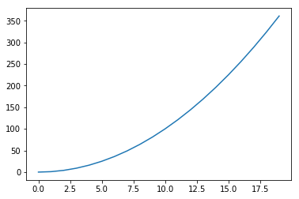

Generator
g = (x*x for x in range(1,10))
next(g)
1
for i in g:
print(i)
4
9
16
25
36
49
64
81
def fib(max):
n,a,b = 0,0,1
while(n<max):
yield b
a,b = b, a+b
n = n+1
return 'done'
f = fib(6)
for i in f:
print(i)
1
1
2
3
5
8
%matplotlib inline
import matplotlib.pyplot as plt
import numpy as np
x = np.arange(20)
y = x**2
plt.plot(x, y)
[<matplotlib.lines.Line2D at 0x11bdb46d8>]

a=2
del a
for i in range(2):
print(i)
0
1
print (1.2 - 1.0 == 0.2)
False
1.2-1.0
0.19999999999999996
a = 1
b = 2
c = 3
d = a if a>b else b
d
2
def triangles():
L=[1]
while True:
yield L
L.append(0)
L = [L[i-1]+L[i] for i in range(len(L))]
#L.pop()
return 'done'
n = 0
results = []
for t in triangles():
print(t)
results.append(t)
n = n + 1
if n == 10:
break
if results == [
[1],
[1, 1],
[1, 2, 1],
[1, 3, 3, 1],
[1, 4, 6, 4, 1],
[1, 5, 10, 10, 5, 1],
[1, 6, 15, 20, 15, 6, 1],
[1, 7, 21, 35, 35, 21, 7, 1],
[1, 8, 28, 56, 70, 56, 28, 8, 1],
[1, 9, 36, 84, 126, 126, 84, 36, 9, 1]
]:
print('测试通过!')
else:
print('测试失败!')
[1]
[1, 1]
[1, 2, 1]
[1, 3, 3, 1]
[1, 4, 6, 4, 1]
[1, 5, 10, 10, 5, 1]
[1, 6, 15, 20, 15, 6, 1]
[1, 7, 21, 35, 35, 21, 7, 1]
[1, 8, 28, 56, 70, 56, 28, 8, 1]
[1, 9, 36, 84, 126, 126, 84, 36, 9, 1]
测试通过!
print(results)
[[1, 0], [1, 1, 0], [1, 2, 1, 0], [1, 3, 3, 1, 0], [1, 4, 6, 4, 1, 0], [1, 5, 10, 10, 5, 1, 0], [1, 6, 15, 20, 15, 6, 1, 0], [1, 7, 21, 35, 35, 21, 7, 1, 0], [1, 8, 28, 56, 70, 56, 28, 8, 1, 0], [1, 9, 36, 84, 126, 126, 84, 36, 9, 1]]
为什么results的输出末尾带0？我来回答！
在我的电脑中，results的结果是：
[[1, 0], [1, 1, 0], [1, 2, 1, 0], [1, 3, 3, 1, 0], [1, 4, 6, 4, 1, 0], [1, 5, 10, 10, 5, 1, 0], [1, 6, 15, 20, 15, 6, 1, 0], [1, 7, 21, 35, 35, 21, 7, 1, 0], [1, 8, 28, 56, 70, 56, 28, 8, 1, 0], [1, 9, 36, 84, 126, 126, 84, 36, 9, 1]] 通过观察，不难发现，第十个list：
[1, 9, 36, 84, 126, 126, 84, 36, 9, 1] 末尾没有零。于是，似乎可以想到些什么，为什么最后一个正常呢？ 再看一下调用triangles生成器的代码:
for t in triangles(): print(t) results.append(t) n = n + 1 if n == 10: break 当执行第三句results.append(t)时，实际上，此时results中的List和t指向的List是同一个地址。所以，如果t发生变化，resluts中的List也会跟着变化。那么，t指向的List有没有发生变化呢？答案是有： 当再次执行到for t in triangles():时，生成器：
def triangles(): L = [1] while True: yield L L.append(0) L = [L[i - 1] + L[i] for i in range(len(L))] 里面的L.append(0)就会给t指向的List末端加0.所以…
def triangles():
L=[1]
while True:
yield L
tmp = L.copy()
tmp.append(0)
L = [tmp[i-1]+tmp[i] for i in range(len(tmp))]
#L.pop()
return 'done'
iterator & iterable
凡是可作用于for循环的对象都是Iterable类型；
凡是可作用于next()函数的对象都是Iterator类型，它们表示一个惰性计算的序列；
集合数据类型如list、dict、str等是Iterable但不是Iterator，不过可以通过iter()函数获得一个Iterator对象。
for x in [1, 2, 3, 4, 5]:
pass
# 首先获得Iterator对象:
it = iter([1, 2, 3, 4, 5])
# 循环:
while True:
try:
# 获得下一个值:
x = next(it)
except StopIteration:
# 遇到StopIteration就退出循环
break